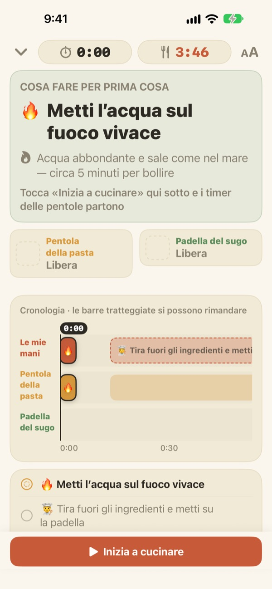
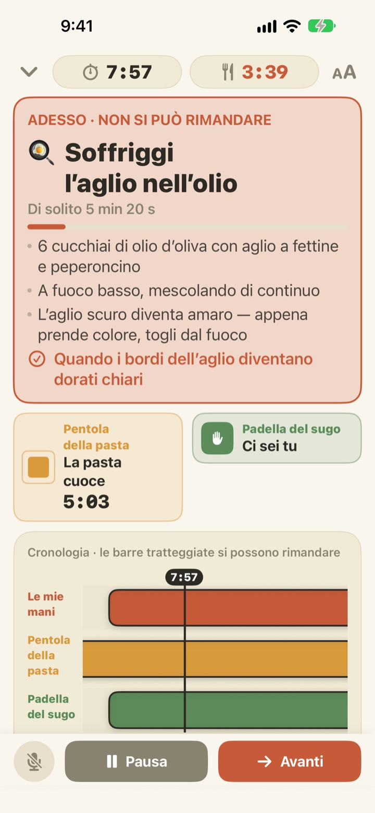
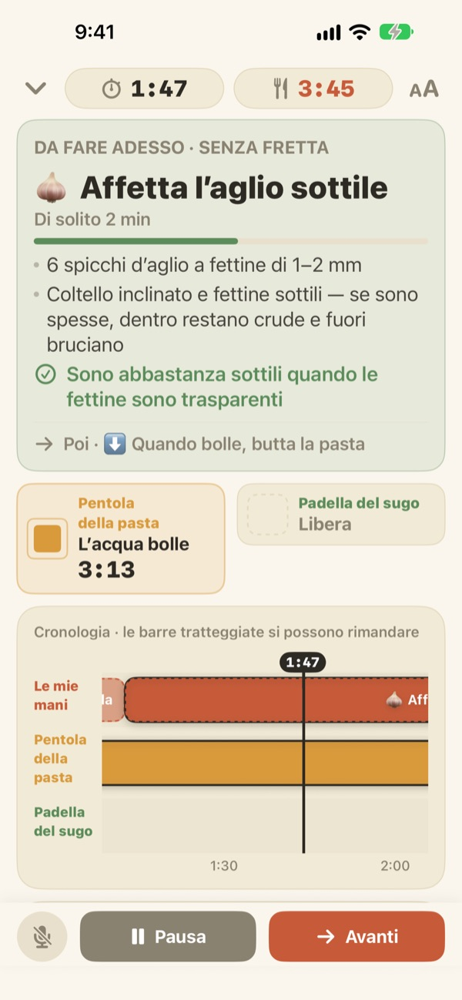
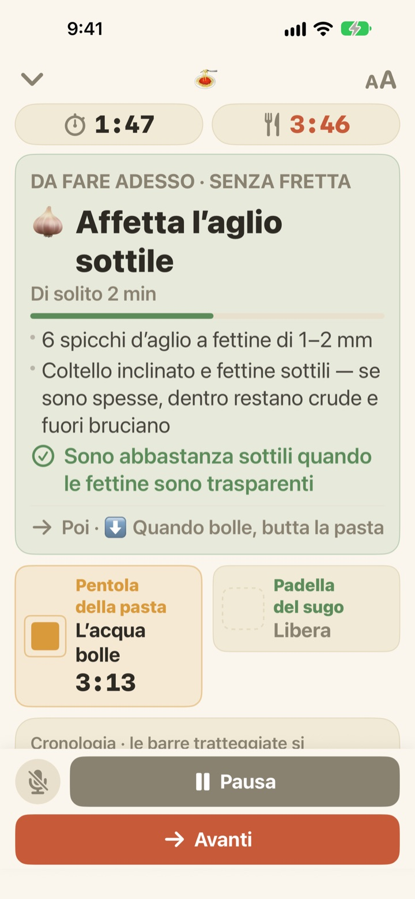

La pasta bolle.
Intanto il sugo è pronto.
Quando due pentole vanno a velocità diverse, Geusaie ti mostra in grande l’unica cosa che le tue mani devono fare adesso. Il sugo viene programmato a ritroso dal momento in cui scoli la pasta.
Tutte le funzioni sono gratuite. Nessun account richiesto.

Provalo
Cucina un piatto di aglio e olio a velocità 20x. Tocca «Inizia a cucinare», poi «Avanti» ogni volta che avresti finito un compito. Guarda come cambia la scheda quando arriva il momento di scolare la pasta.
Tre timer accesi e la pasta comunque scotta?
Un timer per la pasta, uno per il sugo e l’aglio a memoria, e a un certo punto non sai più cosa viene prima. Stai affettando proprio quando c’è da scolare, e il sugo arriva con due minuti di ritardo. Geusaie conosce la ricetta come «prima questo, poi quello» e ti dice solo l’unica cosa da fare adesso.
Quando non può aspettare, la scheda diventa rossa
Scolare la pasta, l’aglio che sta per bruciarsi: quando un compito rovinerebbe il piatto se slittasse, la scheda diventa color terracotta e ti dice di lasciare un attimo il tagliere.
Quando una pentola è pronta, ti arriva una notifica anche se non stai guardando, con la cosa da fare subito.

Tagliare solo quando hai le mani libere
Affettare l’aglio, grattugiare il formaggio, pesare: niente di tutto questo ha un orario, quindi Geusaie non conta i secondi. La barra si riempie mentre hai le mani libere, si ferma quando una pentola ti chiama e riprende da dove eri rimasto.
Accendi il fuoco tre minuti dopo? Tutto il resto slitta di tre minuti. Il programma viene ricalcolato da quello che hai fatto davvero.

Appoggiato sul piano di lavoro, vai avanti a voce
Quattro dimensioni del testo per leggerlo anche a un paio di passi, e lo schermo resta acceso mentre cucini.
Mani bagnate? Di’ avanti e passa al compito successivo senza toccare nulla.

Tre passi per arrivare in tavola
- 1
Scegli un piatto
Vedi quanto ci vuole più o meno e quante pentole servono.
- 2
Tocca «Inizia a cucinare»
Prima ti mostra il primo compito, poi i timer delle pentole partono appena tocchi.
- 3
Fatto? Avanti.
Tocca il pulsante o di’ «avanti» e compare il compito successivo.
Il colore dice quanto è urgente
- Verde
- Preparazione. Fai con calma.
- Senape
- Una pentola ha bisogno di te. È ora, ma senza fretta.
- Terracotta
- Se aspetti, la pasta scuoce o l’aglio brucia. Fallo adesso.
- Riquadri delle pentole
- Il quadrato che si restringe è il tempo che resta. Il tempo delle pentole non viene mai nascosto.
Sulla linea del tempo, le barre tratteggiate sono compiti che possono aspettare.
Tutte le funzioni sono gratuite
Gratis
- Entrambe le ricette
- Un timer per ogni pentola e la linea del tempo completa
- Una notifica quando una pentola è pronta
- «Avanti» a voce
- Quattro dimensioni del testo
- Apri una ricetta con Siri o Comandi Rapidi
Sostieni lo sviluppatore (facoltativo)
- Se l’app ti è utile, puoi lasciare una piccola mancia dalle impostazioni
- La mancia non sblocca nulla. Anche senza, tutte le funzioni restano tue
Mance singole, non un abbonamento.
Niente account, niente pubblicità, e funziona anche senza connessione.
Domande frequenti
Dico «avanti» ma non succede niente.
Il pulsante del microfono in basso a sinistra è rosso quando ascolta e grigio quando è spento. La prima volta consenti sia il microfono sia il riconoscimento vocale; se hai rifiutato, riattivali in Impostazioni > Geusaie. L’app ascolta la parola scritta sul suo pulsante Avanti. In una cucina molto rumorosa, tocca semplicemente «Avanti».
Una pentola è pronta ma non è arrivata la notifica.
Controlla che le notifiche siano attive in Impostazioni > Notifiche > Geusaie. Una modalità Full immersion può silenziarle. Le notifiche arrivano solo quando una pentola è pronta; la preparazione non ti mette mai fretta.
Cosa succede ai tempi se inizio in ritardo?
Vengono ricalcolati da quello che hai fatto davvero. Se accendi il fuoco tre minuti dopo, tutto ciò che segue slitta di tre minuti, e il sugo resta programmato a ritroso sul momento in cui la pasta è pronta.
Il testo è troppo piccolo.
Nella schermata di cottura, tocca il pulsante della dimensione del testo in alto a destra e scegli Normale, Grande, Più grande o Grandissimo. La scelta viene ricordata.
Lo schermo si spegne mentre cucino?
No. Mentre cucini lo schermo resta acceso, così non devi mai toccarlo con le mani bagnate.
Quali piatti ci sono?
Aglio e olio (circa 15 minuti, 2 pentole) e pasta alla crema di pomodoro (circa 20 minuti, 2 pentole), da ricette di Serious Eats, Gimme Some Oven, RecipeTin Eats e The Burnt Butter Table. Va bene qualsiasi piatto con due pentole sul fuoco insieme: dicci quale vorresti.
La mia voce viene registrata?
No. L’app ascolta solo la parola «avanti» e non registra né salva alcun audio. Se il dispositivo lo supporta, il riconoscimento avviene sul dispositivo. Non vengono raccolti dati personali.
Posso aprirla con Siri?
Sì. Scegli un piatto in Siri o nell’app Comandi Rapidi e si apre subito la sua schermata di cottura. I timer partono quando tocchi «Inizia a cucinare», quando sei pronto a mettere su l’acqua.
Su quali dispositivi funziona?
Su iPhone e iPad con iOS 17 o versioni successive. Non servono account né connessione a Internet.
Come segnalo un problema o propongo una ricetta?
Da Impostazioni > Invia feedback nell’app, oppure scrivendo all’indirizzo qui sotto. Indicare il modello del dispositivo e la versione di iOS ci aiuta a verificare prima. Di solito rispondiamo in pochi giorni.
Ti sei bloccato, hai notato qualcosa di strano o hai una ricetta in mente? Scrivi a leeo@kakao.com.